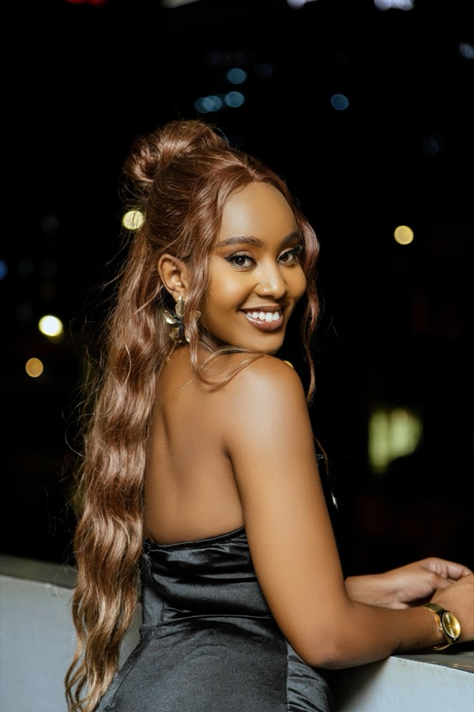
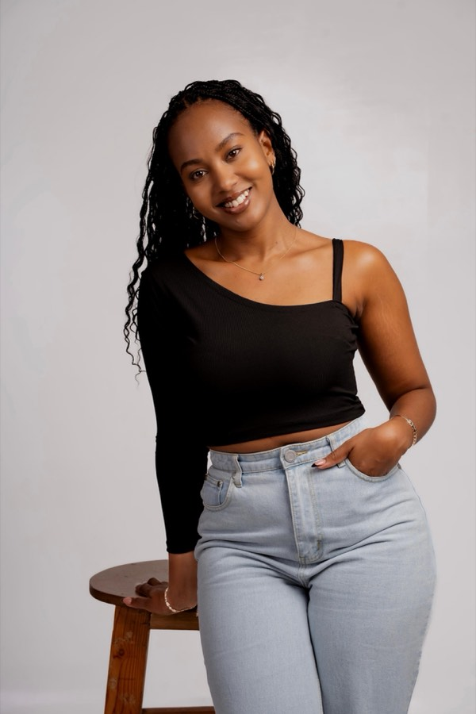
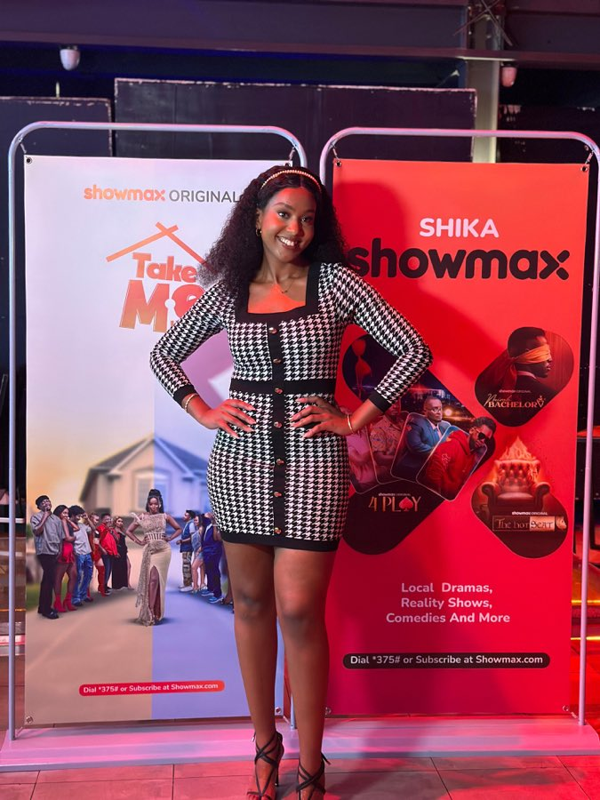
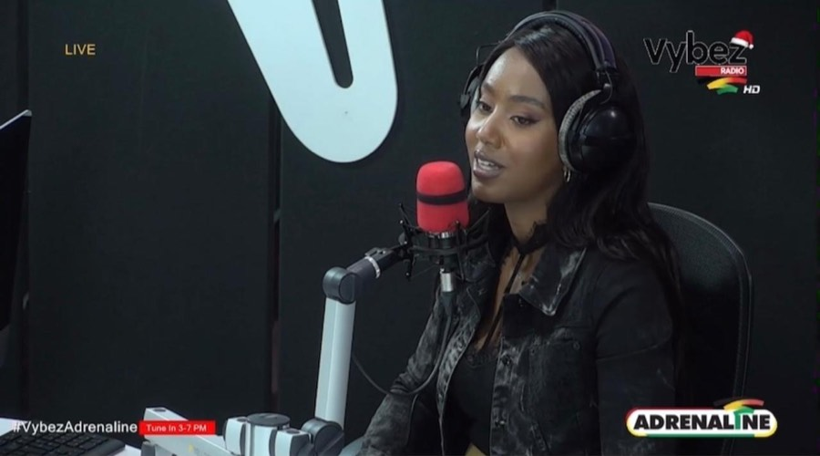
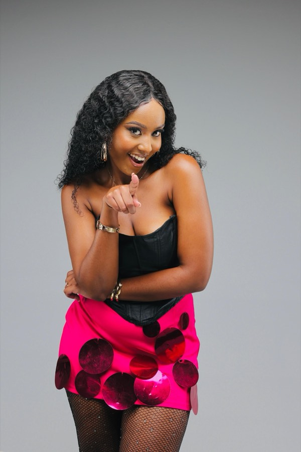
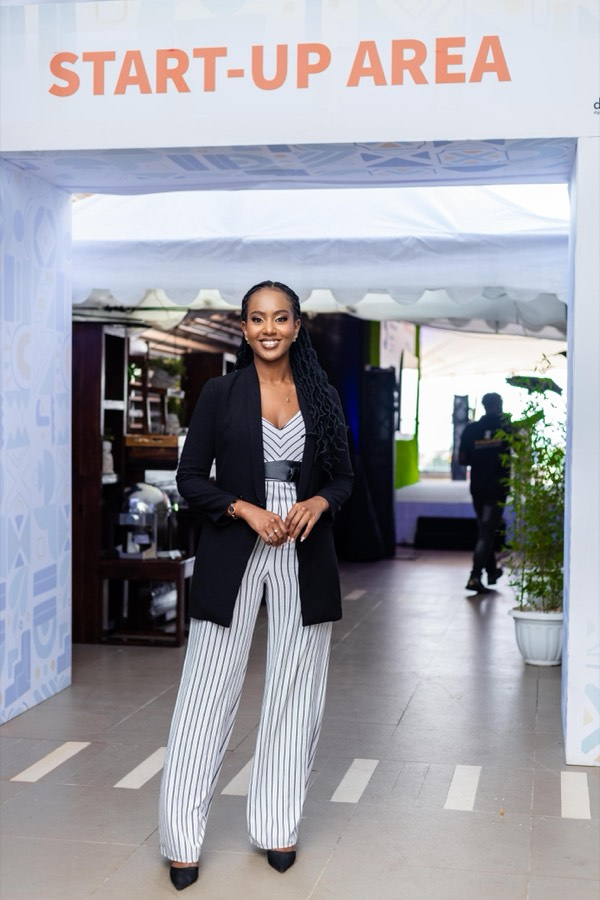

Content Creator / Commercial Model / Media Personality
NancyKirimi
Creating stories. Elevating brands. Inspiring experiences.
I’m a storyteller at heart, using content, conversation, and creativity to bring brands to life. As a content creator, commercial model, reality TV personality, former radio co-host, and event host, I love creating experiences that capture attention, spark connection, and leave a lasting impact.


About
A career built around connecting with people — on and off the screen.
From collaborating with brands on travel and lifestyle campaigns to appearing in television commercials, co-hosting on Vybez Radio, hosting high-profile events, and featuring on reality TV, I’ve built a career around connecting with people both on and off the screen. Every project is an opportunity to tell a story, inspire an audience, and deliver content that feels authentic, engaging, and memorable.
Whether I’m exploring new destinations, stepping in front of the camera, behind the microphone, or taking the stage as a host, I bring confidence, energy, and professionalism to every experience. My goal is simple: to help brands stand out through compelling storytelling and genuine human connection.
What I Do
- 01Content Creation
- 02Commercial Modelling
- 03Radio & Media Presenting
- 04Event Hosting / MC
- 05Reality TV
- 06Brand Campaigns
- 07Travel Content
- 08User-Generated Content (UGC)
Impact
- 10+ Brands across travel, lifestyle and commercial campaigns
- 800K+ Views generated across branded content campaigns
- 150K+ People reached through travel-focused content
- 500+ Attendees at events hosted
Portfolio
Featured work
Brand collaborations, commercial modelling, television, radio and live event hosting.
-
Travel Content
Sironka Valley Resort
Travel and promotional content created for travel agencies and tourism brands.
-
02
Travel Content
Aidan Safaris
Travel and promotional content created for travel agencies, tourism brands and events.
-

Reality TV
Take Me Home — Season 2
Cast member on the Showmax reality series, showcasing personality, storytelling and on-screen presence.
-
04
TV Commercial
Indomie Kenya
Featured in television commercials for the brand.
-
Event Hosting & Media
German-African Business Summit 2024
Hosted on-site interviews, speaking with business leaders, delegates and stakeholders.
-
06
TV Commercial
Weetabix Kenya
Featured in television commercials for the brand.
-

Radio
Vybez Radio
Former co-host, engaging audiences through entertaining and informative conversations while building strong on-air communication and presenting skills.
-
08
Brand Campaign
Optica Kenya
Collaborated with the brand on branded content campaigns.
-

Commercial Modelling
Commercial & Editorial
Available for television, digital, print and lifestyle campaigns.
-
10
Event Hosting
PMVA, Nairobi
Hosted the PMVA event in Nairobi.
-

Media
GABS 2024 Documentary
Featured in the official event documentary, contributing to the summit’s media coverage and storytelling.
-
12
Brand Campaign
Destination Marketing
Produced engaging social media campaigns focused on destination marketing, travel experiences and lifestyle content.
Media
Screen & broadcast
- Take Me Home — Season 2 Cast member Showmax
- Indomie Kenya Television commercial Commercial modelling
- Weetabix Kenya Television commercial Commercial modelling
- GABS 2024 Documentary Featured German-African Business Summit
- Vybez Radio Co-host (former) Radio
Gallery
Photo gallery
Select an image to view it full size.
Social Impact & CSR
Crowning The Little Feet Foundation
I am the co-founder of Crowning The Little Feet Foundation, a community initiative dedicated to supporting children’s education and wellbeing by providing locally made school shoes to less privileged children across Kenya.
Through this initiative, we partner with local shoemakers in Nairobi to create quality school shoes while also supporting local craftsmanship. We then distribute the shoes to children in need, helping them attend school with confidence and dignity.
So far, the foundation has reached children in Kajiado and Kisumu, with a mission to continue expanding its impact to more communities across Kenya.
Beyond creating content and working with brands, I believe in using my platform to inspire positive change and contribute meaningfully to the lives of others.
Services
How we can work together
A detailed breakdown of services offered.
- 01
Brand Collaborations
- 02
Content Creation
- 03
Travel Content Creation
- 04
User-Generated Content (UGC)
- 05
Commercial Modelling
- 06
Event Hosting & MC Services
- 07
Radio & Media Presenting
- 08
Brand Ambassadorships
Featured Brands
Clients & media
A showcase of brands and organisations I’ve worked with.
- Indomie Kenya
- Weetabix Kenya
- Optica Kenya
- ShowmaxTake Me Home — Season 2
- PMVA
- German-African Business SummitGABS 2024
- Vybez Radio
- Travel Agency Collaborations
Contact
Let’s work together
Available for brand collaborations, commercial campaigns, hosting and presenting.
- Email kiriminancy2@gmail.com
- Phone 0758893542
- Instagram kirimi.nancy
- TikTok kirimi.nancy